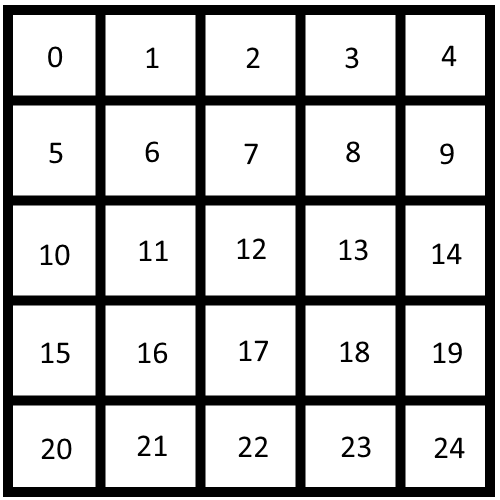
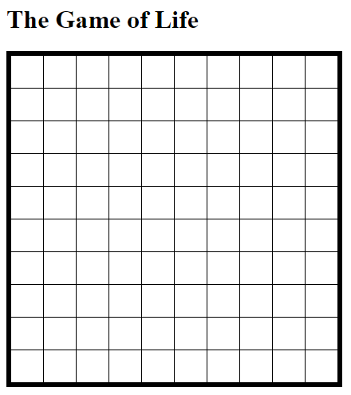

Making the Grid
The grid will be need a set number of rows and columns.
Each cell will be assigned an index number to distinguish them from each other in the code.
Notice in the example how the index number starts at zero in the top left cell, increases to the right, and continues counting on the next row.
The grid may be reffered as a table sometimes due to HTML naming conventions.

Example of a 5x5 grid
Check your Progress
The code should now be making the full grid on the website!
...but how?
Using nested for loops, each row is using the variable rowHTML to create an entire row's HTML elements and adding it to the table's innerHTML.
Within each row, cells are being created as an HTML element with the class="cell" to make them all styled as identical white squares and an id="cell" + index so each cell has a specific index number inside its id.
Nested for loops means having a for loop inside of another for loop. It is very useful when traversing through rows in a grid.
